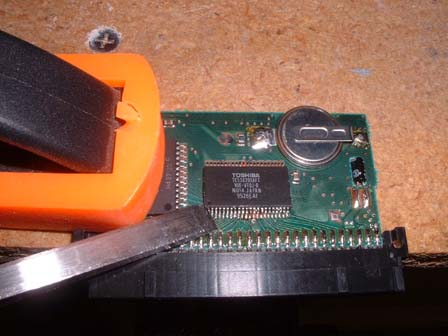

Transplanting ROMs
To swap or replace a ROM in a Virtual Boy cart isn't an easy job, but it can be fairly painless if you are careful. This can be useful if you somehow have a bad ROM that you want to replace, a ROM you'd rather put in a cart instead of the current one (I don't know why you'd have this, but you never know), or just because you're bored ;-) . The reason I did it was because I had a dead Wario Land cart, I dumped the rom then compared it to a working rom, and it showed that the current ROM was bad, so I still had the old ROM from the Teleroboxer that I took out to make my reprogrammable cart, so I decided to try it out...
Here's what you start out with... a basic Wario Land cartridge

First you have to remove the old chip... I did it by using a chisel and getting under the corner, then using a soldering iron to heat up the pins as you lightly pry the chip off the board with the chisel (BTW, that is actually a picture of getting the Teleroboxer chip off... the art of picture recycling)
Then after you get the chip off, you want to place the chip to replace the original one perfectly in line with the connections on the board, then firmly press down with your finger while you take your WELL CLEANED soldering iron and heat and push down each pin and making sure you have a good connection while making sure you don't get any solder shorting any pins out (that is where the well cleaned comes into play most). Just continue all the way around the chip until every pin is connected. Then you should look between every pin and maybe use a pick to go between every pin so you know there are no shorts and no loose pins.
Then after you're done with the transplant, you have yourself the other game! As you can see it doesn't look as nice, since the soldering was done by hand, but it works and does the job.
Of course, I this worked for me, but I am not responsible if you mess something up while you're trying this, so do it at your own risk.
{kind=link}